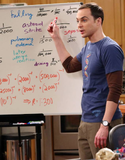

To understand the context of this problem, read the class #06 exercise sheet. After the deadline the problem stays open on Mooshak, but submissions no longer count towards your grade.
In this problem you should submit a function as described. Inside the function do not print anything that was not asked!
The name of the .py source file you submit to Mooshak should NOT start with a digit (you will get an error if you submit it like that).

Sheldon Cooper has developed a new obsession: he only wants to read text segments that are "letter-controlled". In any piece of text he examines, there can be at most k different letters. Everything else, such as digits, punctuation or spaces, doesn't bother him, but letters are sacred, and too many distinct ones make him anxious.One day, Sheldon found a long string of text on the whiteboard in the university cafeteria. He wants to figure out the longest contiguous segment he can read without exceeding his distinct-letter limit, but he needs your help.
Write a function letters(k, str) that receives a receives an integer k and a string str and returns the length of the largest substring (a contiguous sequence of characters from the original string) that contains at most k different letters.
All letters in the string are guaranteed to be in lowercase. Non-letter characters count towards the length to be computed, but do not count as letters towards the limit of at most k distinct letters.
The following limits are guaranteed in all the test cases that will be given to your program:
| 1 ≤ k ≤ 26 | Number of different letters allowed |
| 1 ≤ |str| ≤ 200 000 | Length of initial string |
NOTE: the limits are high and you must have an efficient solution.
If your code checks all possible segments and iterates in each one through all characters one by one, it will result in a Time Limit Exceeded.
Example Function Calls
print(letters(2, "sheldon cooper")) print(letters(6, "introduction to programming")) print(letters(4, "ip|cc1024|dcc|fcup"))
Example Output
4 11 15
Explanation of the first example
The largest substring is " coo" with length=4 and 2 distinct letters (c and o)
Explanation of the second example
The largest substring is "tion to pro" with length=11 and 6 distinct letters (t, i, o, n, p and r)
Explanation of the third example
The largest substring is "p|cc1024|dcc|fc" with length=15 and 4 distinct letters (p, c, d and f)